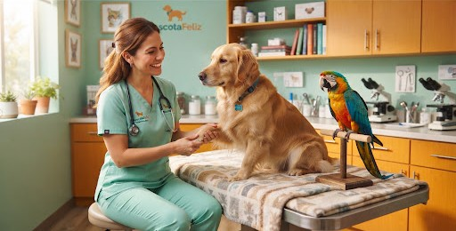
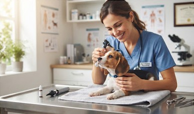
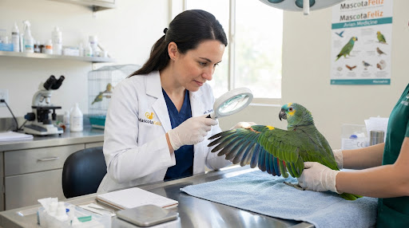
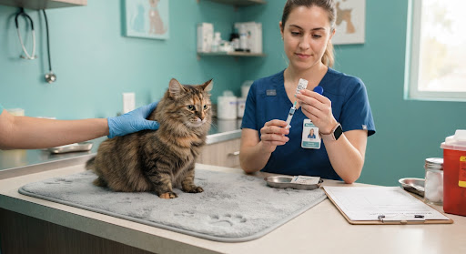
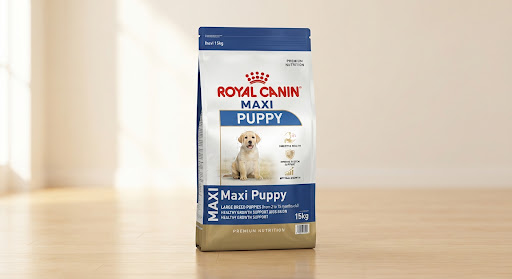
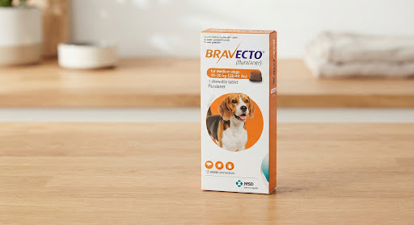
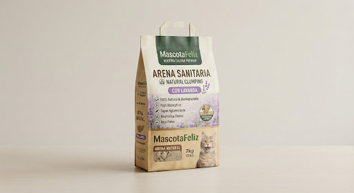
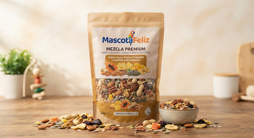

Perros
CaninosMedicina preventiva integral, desparasitación rigurosa, estética canina hipoalergénica y la mejor nutrición premium para cada etapa de su vida.
- Plan Cachorro & Senior
- Peluquería y baños medicados
- Traumatología y ortopedia
Centro Veterinario Colegiado & Farmacia
Atención médica integral, medicina preventiva, especialistas en aves exóticas y la mejor tienda de alimentos y salud para tus consentidos.

Dra. Sarah Jenkins
Hoy libre3 turnos disponibles
Atención Inmediata
Triaje médico directo por WhatsAppAtención Personalizada
Diseñamos protocolos clínicos y espacios exclusivos adaptados a la fisonomía y comportamiento de tu mascota.
Medicina preventiva integral, desparasitación rigurosa, estética canina hipoalergénica y la mejor nutrición premium para cada etapa de su vida.
Salas clínicas exclusivas sin aromas de perros ni estrés sonoro, nutrición renal / urinaria y vacunación triple felina certificada.
Médicos expertos en psitácidos, canarios y paseriformes: arreglo de pico y plumas, diagnóstico de parasitosis y asesoría de enriquecimiento ambiental.
Servicios clínicos
Tarifas transparentes, médicos especializados y protocolos clínicos del más alto rigor científico.

Consulta GeneralExamen físico completo, revisión dental, peso, auscultación y plan nutricional adaptado.

Aves & ExóticosDiagnóstico aviar por especialistas titulados, chequeos de plumaje, corte de pico y pautas de hábitat.

InmunizaciónCartilla sanitaria oficial, microchip internacional, rabia, pentavalente canina y triple felina.
Quirófanos equipados, anestesia inhalatoria, ecografía Doppler y analíticas sanguíneas en 15 minutos.
Farmacia y Nutrición

Perro Cachorro -15% OFFPara cachorros de razas grandes hasta los 15 meses.

Farmacia CaninaProtección continua por 12 semanas contra pulgas y garrapatas.

Gatos HigieneUltra aglomeración, libre de polvo en un 99.8% y neutralizador de olores.

Aves NutriciónSemillas seleccionadas, frutos deshidratados y vitaminas añadidas.